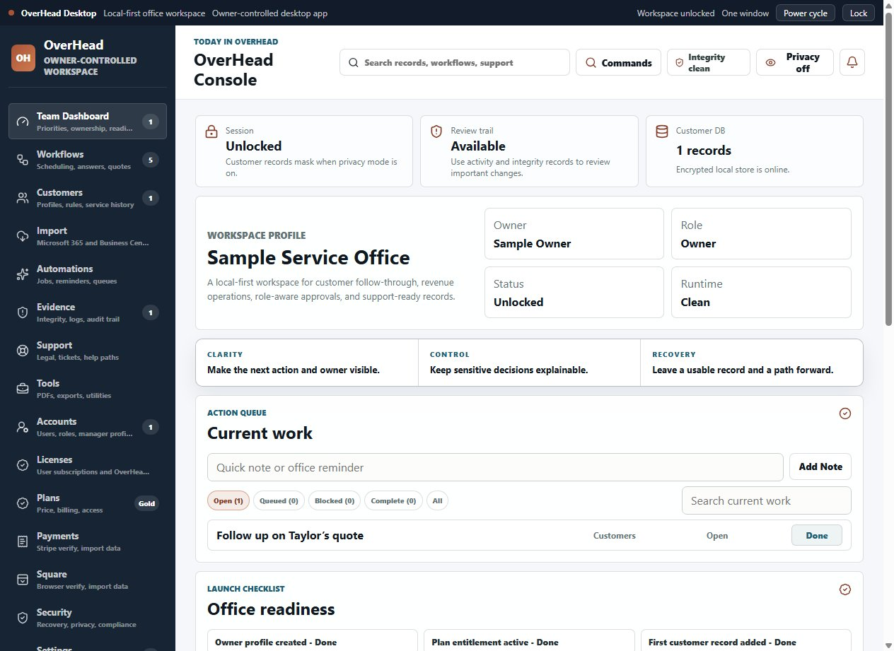
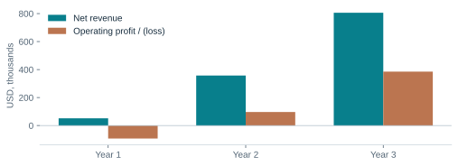
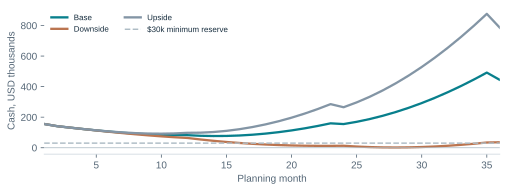

A general-purpose business plan for Overhead LLC: the business, its customers, its commercial model, and the work required to build sustainable revenue.
Verified product evidence comes from the current project, published materials, release artifacts, and public availability checks.
Research comes from the primary sources listed at the back. Source dates and definitions accompany market figures.
Planning assumptions are proposed operating targets and financial inputs. They are neither historical results nor management guarantees.
The business name and DBA were supplied by the owner. No customer ledger, bank statements, sales reports, formation documents, or capitalization records were supplied. The financial model therefore starts from an assumed zero paid-customer balance and a separately identified funding scenario. It does not assert that the company actually has no customers or revenue.
OVERHEAD LLCBUSINESS PLAN · 2026
01 · EXECUTIVE SUMMARY
Make the next customer action visible
Overhead LLC develops OverHead, a Windows-centered workspace for the office work that follows a customer inquiry: quotes, invoices, reminders, staff handoffs, and approvals.
The business addresses a practical management problem. When customer information and pending work sit across inboxes, spreadsheets, notes, and payment tools, the owner must reconstruct what happened and decide what should happen next. OverHead aims to make that work visible, assign responsibility, and retain the context needed to finish it.
The commercial approach
Begin with owner-led service businesses that have a Windows office workstation and recurring quote or payment follow-up. Sell a focused improvement to an existing workflow, supported by assisted setup and measurable before-and-after results. Keep a broad product architecture while concentrating early selling and onboarding on two repeatable use cases.
Published desktop pricing$59–$299 / month
Silver, Gold, and Black workspace plans; paid activation remains a launch gate.
Product stageBuilt; validation ahead
Desktop release, website, documentation, and operating workflows exist. Paid traction has not been verified.
Near-term priorities
Complete production billing, signed distribution, and customer recovery tests; recruit 15 pilot offices; validate first-week use and willingness to pay; then build a repeatable acquisition and retention process. Treat Cylinder, the separate server/IoT edition, as a later commercial option with its own delivery requirements.
Business name: Overhead LLC. DBA: Overhead LLC. Product name: OverHead.
Mission
Make daily office operations clearer, more accountable, and accessible to owner-led businesses.
Business description
Overhead LLC is developing and commercializing business administration software. Its primary offer is a recurring workspace subscription. The product combines a local Windows application with a shared account and browser layer so the office can organize customer work, manage staff responsibilities, and preserve operational history.
The business will operate as a lean software company, with product development, support, and sales coordinated by the founder and supplemented by specialist contractors. A remote operating model is assumed for budgeting; a permanent office lease is not included.
Business element
Plan position
Primary customers
Owner-led local and service businesses; initial selling focus on small office teams.
Initial geography
United States. Raleigh/Triangle and North Carolina are proposed pilot markets, not a statement of incorporation or registered address.
Distribution
Public website and Windows download; guided onboarding and partner referrals.
Revenue model
Monthly desktop workspace subscriptions; separate Cylinder deployment option.
Current evidence
Version 0.3.12 in project metadata and an available public desktop ZIP; published product and user-guide pages.
Ownership and formation
Business name/DBA confirmed by the owner. Ownership percentages, formation jurisdiction, registered address, and capitalization were not supplied.
Operating principles
Make the next action clear. Keep the owner in control of sensitive decisions. Minimize unnecessary data. Help customers adopt one useful workflow at a time. Provide recovery and export paths. Describe product and commercial capabilities accurately.
Governance
Maintain company-level accounting, written contractor/IP assignments, a controlled release process, and a monthly operating review. Document who can commit spending, approve access changes, sign agreements, and authorize customer refunds before those responsibilities are delegated.
The target customer already has work coming in. The office needs a reliable way to move that work toward a completed service, a paid invoice, and the next customer interaction.
What the office experiences
Business consequence
OverHead response
Quotes sit without a next step
Slow decisions and avoidable lost opportunities
A visible quote status, responsible person, and scheduled follow-up.
Payment information is scattered
Time spent chasing context and overdue invoices
An invoice work queue and provider/payment reference context.
The owner is the routing system
Staff wait; decisions stay in the owner’s head
Defined tasks, roles, approvals, and handoff records.
Customer history is incomplete
Repeated questions and inconsistent service
Customer records and a shared operating playbook.
A problem cannot be reconstructed
Support delays and customer disagreement
Reviewable activity, support exports, and recovery tools.
The first offer: an office follow-through review
Use the existing “Office Revenue Leak Check” concept as a discovery session. Review a small, permissioned sample of open quotes, unpaid invoices, waiting approvals, and customers with no next action. Produce an owner-approved worklist and establish a baseline. Do not describe all open amounts as money that OverHead will recover.
A measurable value test
For each pilot, compare a two-week baseline with four weeks of use. Track administrative minutes, overdue next actions, quote response times, and completed follow-ups. Record payment outcomes separately from software use; customer payment timing has multiple causes.
A customer should buy because a recurring operational problem is solved at an acceptable cost. Broad feature counts and AI language are supporting details; retention depends on whether the office keeps using the workflow.
OverHead places customer context, active work, account controls, and operating status in one Windows workspace.

Existing OverHead desktop capture from the project’s user-guide materials. The screen uses fictional sample data; it is product illustration, not customer traction.
Daily use
The owner opens the current-work queue, checks what needs attention, and assigns or completes the next step. Customer details and workflow context support the decision.
Management control
Staff roles, approval records, local recovery tools, and operating evidence support delegation. Customers still need appropriate device and account practices.
Source and release evidence establishes product scope. It does not establish that every integration is configured for every customer or that commercial outcomes have been achieved.
Capability
Evidence reviewed
Commercial boundary
Customer and office work
Customer records; appointments, quotes, invoices, PDF tools; task queues and playbooks in source and guide.
Validate the selected workflow against real pilot records before wider rollout.
Identity and staff access
Firebase account and workspace structure; email verification, role controls, and license records.
Repeat account creation, invitation, recovery, and role tests in the production environment.
Customer synchronization
Shared customer synchronization and status handling are present in current backend source.
Do not assume every desktop record or local attachment is synchronized; test conflicts and record ownership.
Local documents and recovery
Local customer document vault, backups, exports, privacy controls, and support evidence.
Local attachment storage is not a cloud backup service. Test restore and device loss.
External providers
Microsoft import controls; Square/Stripe integration surfaces and readiness logic.
Configuration, permissions, provider availability, and delivery confirmation remain necessary.
Subscription billing
Server billing and webhook implementation; desktop shared-license synchronization.
Configured billing endpoint returned HTTP 404 on September 13. Live checkout and paid access were not verified.
Windows distribution
Published 0.3.12 desktop ZIP and local installer artifact.
Inspected installer is unsigned. Signed distribution and update acceptance remain commercialization work.
Cylinder and other platforms
Separate Windows Server/IoT package path; iOS source exists.
No Cylinder or non-Windows revenue included. Broad platform availability is not assumed.
The opportunity is supported by broad small-business demand for better execution and cash-flow discipline. OverHead still needs evidence of demand for its particular product and price.
U.S. market context36.2 million
Small businesses in the SBA’s 2025 profile; includes nonemployer businesses and firms outside OverHead’s target.
Survey population6,525 responses
The Federal Reserve’s 2025 Small Business Credit Survey, reported in March 2026; small employer firms with 1–499 employees.
Position the product around follow-through and administrative capacity. A business facing uneven cash flow may value invoice visibility, but it may also resist another subscription. The sales process should demonstrate a concrete workflow benefit before asking for a broad change in software.
The survey describes a nationwide convenience sample and uses weighting; it is not a random sample or a survey of OverHead prospects. These findings support the problem context, not a claim that the reported percentages will buy the product.
Research implication
Test demand in two office-based service segments, compare the same outcome measures, and retain the segment with stronger activation and paid retention. Use interviews to discover the customer’s current workaround, who approves spending, and which missing integration would stop adoption.
OverHead can serve several kinds of small businesses. The first acquisition program should concentrate on offices with similar buying decisions and workflows.
Segment
Initial fit
Primary test
Local service offices
Cleaning, maintenance, repair, and similar firms with office-based quote and invoice follow-up.
Will the office complete more next actions without duplicating field-service entry?
Small business service firms
Nonregulated agencies, consultants, and other teams coordinating quotes, projects, and payments.
Will approvals and customer context justify another subscription?
Solo operators
Owner-controlled work with a persistent Windows workstation.
Can Silver deliver useful value without support-heavy setup?
Larger / regulated / mobile-first teams
Potential later opportunities; more integration, compliance, or device demands.
Defer until product fit and support requirements are evidenced.
Customer qualification
Prioritize an owner or office manager with purchasing authority, recurring follow-up work, an accessible Windows workstation, a willingness to use real records in a supervised pilot, and an existing problem whose cost can be described. Exclude prospects needing full accounting, sophisticated dispatch, or regulated decision support as their primary use case.
Market sizing without false precision
The 36.2 million U.S. small-business count is broad context, not a verified addressable market. A product-specific serviceable market requires filtering by workflow, size, geography, Windows use, budget, and willingness to adopt. No such verified prospect dataset was available for this plan.
Illustrative qualified-business pool
Annual subscription capacity at $126.50/month
50,000 businesses
$75.9 million
150,000 businesses
$227.7 million
300,000 businesses
$455.4 million
These pool sizes are explicit sizing hypotheses, not census results or discovered prospects. Capacity assumes one fully paying workspace per business for a year, before refunds and costs. Replace them with a deduplicated, qualified business count. The sales forecast is instead built from monthly acquisition and churn; it does not assume capturing a percentage of this pool.
OverHead enters a competitive market. Its proposed advantage is a focused office routine, local Windows operation, owner controls, and practical implementation support.
Alternative
Published price context (USD)
Established strengths
Implication for OverHead
Jobber
Core $49/mo, no commitment, 1 user. Connect $139/mo solo or $199/mo for 5 users. Annual pricing differs.
Scheduling, quoting, invoicing, client follow-ups, and field-service operations.
Avoid full dispatch replacement. Prove a distinct office workflow and integration fit.
HoneyBook
Starter $29, Essentials $49, Premium $109 per month, billed yearly.
Client lifecycle, proposals/contracts, invoices, scheduling and automation by tier.
A strong alternative for service professionals; OverHead must justify price and setup.
Bigin by Zoho
Free tier; Express $9, Premier $15, Bigin 360 $21 per user/month on monthly billing. Annual rates lower.
Affordable pipelines, customer records, integrations and automation.
Low-price CRM is difficult to beat on price alone. Demonstrate workflow value.
Existing office tools
Incremental cost may be low when email, spreadsheets, accounting, and calendars are already purchased.
Familiarity, existing records, little migration effort.
The strongest early competitor may be doing nothing. Minimize duplicate entry.
Official pricing pages checked September 13, 2026. Billing cadence, user limits, discounts, taxes, processing charges, and add-ons differ. This is a positioning comparison, not a feature-equivalent quotation.
Proposed differentiation
Package the product around a small set of repeatable office problems: a daily next-action queue, quote follow-up with owner review, and payment follow-up with customer context. Make setup and recovery understandable. Measure whether this is easier for the target office than configuring an incumbent.
Defensibility
No patent, exclusive distribution agreement, proprietary dataset, or durable moat was verified. Defensibility must be earned through reliable workflow templates, integration quality, trusted support, retained customers, and reusable deployment knowledge. Customer data should remain exportable.
The initial business model uses the desktop prices already published for OverHead. The plan does not assume transaction commissions, advertising, data sales, or enterprise contracts.
Separate Windows Server/IoT deployment; up to 50 users and 100,000 records; distinct evaluation and commercial activation.
Published limits are product positioning, not independently load-tested capacity. Clarify whether owner access is counted in staff allowances before final commercial terms are issued. Plan entitlements must agree across the website, desktop, billing service, and contract.
Commercial policy
The published desktop offer is one no-card, 30-day Gold trial per workspace. Paid checkout, renewal, cancellation, refunds, trial expiry, and account restrictions must work together before a general paid launch. Finalize these terms against the actual provider behavior and a reviewed customer agreement.
Revenue assumptions
The base model uses 40% Silver, 45% Gold, and 15% Black, producing a weighted monthly price of $126.50 per paid workspace. It includes a 1% allowance for refunds/credits and no price increases. New subscriptions contribute a half-month of revenue in their first paid month as a timing approximation.
Cylinder, optional migration services, additional platform editions, and future partner licensing are excluded from the forecast. Each should earn a separate business case before it adds delivery obligations or expected revenue.
Start with direct learning, then build a repeatable acquisition process. Spend more only when activation, retention, and acquisition economics justify it.
Channel
Execution
Measurement
Founder-led discovery
Recruit 15 pilot offices through existing business relationships, local networks, and permission-based outreach.
Interview completion; qualified pilot rate; reasons for refusal.
Workflow content
Publish examples of quote follow-up, overdue next actions, approval handoffs, and customer record cleanup.
Qualified visits; trial starts; activated workspaces by content topic.
Referral relationships
Test relationships with bookkeepers, small-business IT providers, and operations consultants.
Activated referrals; retained paid accounts; partner support burden.
Focused paid tests
Use small search or industry-placement experiments after the workflow and billing gates pass.
Fully loaded acquisition cost and 90-day retained paid customers.
The first sales conversation
Identify one stalled workflow, show how it would run in OverHead, and agree on an outcome measure. Offer a guided setup using a limited customer sample. At trial review, compare results with the baseline, discuss the appropriate tier, and clearly state what still depends on third-party setup.
Illustrative steady-state funnel
Monthly stage
Year 2 model
Year 3 model
Qualified product visits / referrals
625
1,000
Trial starts at 20%
125
200
Activated trials at 80%
100
160
New paid workspaces at 25% of activated trials
25
40
Funnel rates are targets. Paid conversions follow trial completion, usually in a later month. Year 1 uses a staged ramp. Include referral costs and founder selling time in acquisition measurement.
Annual marketing budgets are $18,000, $36,000, and $60,000 in Years 1–3. Favor channels that produce retained customers. Revise growth expectations when actual funnel results differ.
Customer success starts with one functioning routine and an owner who can explain its value. Support and onboarding need clear limits so the subscription remains economical.
1
Qualify
Confirm the workflow, device, decision-maker, provider needs, and intended outcome.
2
Activate
Verify the account, import a small sample, assign the next action, and test a recovery path.
3
Adopt
Help the office use the routine weekly and resolve the friction that prevents repeat use.
4
Retain
Review value and plan fit; maintain records, support, and a clear cancellation/export route.
Service design
Provide searchable help, guided first-workflow setup, and issue-based support. Start with published business-hour coverage; avoid selling a 24/7 service commitment before staffing and escalation coverage exist. Prioritize blocked access, billing discrepancies, and data recovery over optional setup changes.
Budget $60 of direct onboarding effort per new paid customer and $10 of ongoing support cost per billable workspace-month, with infrastructure/provider usage budgeted separately. Trial users should primarily use group guidance and self-service materials; intensive help for every trial is not funded by this model.
Operational target
Definition / action
Activation within seven days
Account verified, at least 10 relevant customer records or a suitable sample, one real workflow, and one completed next action.
Time to first useful workflow
Target less than 60 minutes of customer setup; measure customer time and staff support separately.
Weekly active paid workspace
At least one meaningful record, task, or approval action in seven days; logins alone do not count.
90-day retention
Target at least 90% of new paid workspaces retained; review the cause of every early cancellation.
Support load
Measure minutes per workspace-month and escalation type; add capacity before response times deteriorate.
Offboarding should confirm cancellation status, provide an appropriate export, remove unnecessary access, and explain retention and deletion choices. Recovery and data portability are trust-building capabilities, not reasons to make departure difficult.
OverHead’s delivery model combines an installed Windows workspace with cloud account and collaboration services. Each part needs a clearly defined responsibility.
Firebase identity and shared records · browser surfaces · server billing and provider integrations
What the architecture enables
Local data can support practical office continuity while the network is unavailable, subject to session, entitlement, and provider limits. Shared services can coordinate identities and selected records across devices. Neither characteristic eliminates the need to test synchronization, backups, and reconnection.
Reliability standards for launch
Use automated checks for critical workflows, a signed release pipeline, staged updates, a rollback path, and repeatable recovery exercises. Separate desktop and Cylinder release channels. Validate account isolation and conflicts with distinct test workspaces before using production customer data.
Delivery controls
Keep payment secrets on the server. Require verified provider responses before granting paid access. Record billing event identifiers to handle repeat notifications safely. Monitor failed jobs and synchronization errors, and surface actionable status to the customer.
Vendor economics
The financial model allocates $5 per billable workspace-month to infrastructure and provider usage. Firebase has usage-based pricing; this allocation is a planning allowance, not a vendor quotation. Model data reads, writes, storage, authentication, downloads, and paid provider actions before promising unrestricted usage.
The model assumes a founder-led company using specialist support. It does not represent unverified employees, advisors, or a staffed management team.
Responsibility
Initial accountable role
Planned support
Business direction and product priorities
Founder / managing member
Customer advisory group after pilot recruitment.
Engineering and release ownership
Founder / product lead
Contract engineering, QA, and release/security specialists.
Sales and partnerships
Founder
Part-time campaign, content, and referral support as conversion becomes repeatable.
Customer success
Founder initially
Variable support/onboarding contractors funded through direct delivery costs.
Accounting and commercial administration
Managing member
External accountant/bookkeeper and legal adviser as needed.
Budgeted capacity
Founder compensation is modeled at $36,000, $48,000, and $60,000 annually in Years 1–3. Product/engineering budgets are $48,000, $84,000, and $120,000. These are total cash allowances, not fully staffed department budgets or evidence that those people are hired.
The base Year 3 customer count implies about 237 hours of support per month if each workspace averages 20 minutes. At an assumed $30 per hour, the $10 monthly support allowance covers that level. Contractor supervision, trial support, peak demand, and Black-tier expectations can require more capacity.
Management rhythm
Review product incidents and customer blockers weekly. Review activation, retention, cash, channel economics, and staffing monthly. Reforecast the next 12 months quarterly using actual subscription cohorts and costs. Assign one decision-maker for each metric and each unresolved launch gate.
Key-person continuity
Document release, access recovery, support, and billing procedures. Establish a second authorized operator with controlled access and a tested handover. Document company assets and contractor contributions.
Planning month 1 begins when execution resources are available. Dates move if billing, security, pilot recruitment, or funding gates are delayed.
Timing
Work and output
Advance only when
Months 1–2
Complete billing deployment; test checkout, trial expiry, cancellation/refunds, and webhook replay. Sign installer/update artifacts. Prepare pilot support and recovery procedures.
End-to-end acceptance evidence exists; material access/billing/recovery defects are resolved.
Months 2–4
Recruit 15 pilot offices across two service segments. Establish baselines, activate real workflows, and gather structured feedback.
At least 10 pilots activate and 5 demonstrate repeat weekly use plus a documented value signal.
Months 4–6
Refine onboarding and test paid conversion. Base model reaches about 24 paid workspaces by month 6.
At least 10 customers have paid; cancellation reasons and support costs are recorded.
Months 7–12
Develop workflow content and referrals. Base model reaches approximately 113 paid workspaces at year-end.
Cohorts show a credible retention trend and acquisition spending has a measurable payback.
Year 2
Scale the strongest segment and acquisition channel; strengthen integration and support capacity. Base model ends near 358 paid workspaces.
Customer retention, billing reliability, support load, and cash support hiring and channel expansion.
Year 3
Expand proven templates and distribution; selectively evaluate Cylinder and other platforms. Base model ends near 711 paid workspaces.
Existing customers remain well supported and each expansion has a separate business case.
Stop and correct triggers
If fewer than half of the first 15 pilots activate, pause acquisition expansion and fix setup or product fit. If paid conversion is below 15% of activated trials, revisit the workflow, price, and value evidence. If monthly paid churn exceeds 3% for three months, prioritize retention before increasing marketing.
Review spending when projected cash falls below a six-month operating runway. The financial reserve trigger is $30,000, but the company should act well before reaching it. No product milestone should be described as customer traction until the customer evidence exists.
$5 infrastructure + $10 support / billable month; $60 per new paid workspace
Planning allowances, not supplier quotations; trial effort is covered by fixed budgets/self-service.
Fixed operating costs
$114k / $186k / $264k in Years 1 / 2 / 3
Founder, product, marketing, and general administration. One-time $15k launch expense in Year 1.
Tax / accounting simplification
25% reserve on positive annual operating income; paid at year-end
Planning reserve, not an LLC tax-rate determination. No loss carryforward benefits modeled.
No debt, interest, depreciation, capitalized development, dividends, inventory, receivables, payables, sales tax collections, or payment settlement lag is modeled. All development spending is expensed and all modeled bills are paid in-period. Include actual working capital, payroll burdens, debt terms, tax treatment, and existing balances when known. Fractional customers are expected-value calculations; displayed counts are rounded.
The base case becomes profitable through repeatable acquisition, retained usage, and lean delivery. It remains highly sensitive to customer conversion and support requirements.

Illustrative base case. Net revenue is after credits/refunds; operating profit is before the modeled tax reserve. No actual sales are represented.
Projected income statement (USD)
Year 1
Year 2
Year 3
Gross subscription revenue
$52,200
$361,012
$813,997
Less refunds / credits
$522
$3,610
$8,140
Net revenue
$51,678
$357,401
$805,857
Direct costs of revenue
$15,393
$74,660
$156,556
Gross profit
$36,285
$282,741
$649,301
Gross margin
70.2%
79.1%
80.6%
Product / engineering
$48,000
$84,000
$120,000
Founder compensation
$36,000
$48,000
$60,000
Marketing / acquisition
$18,000
$36,000
$60,000
General / administration
$12,000
$18,000
$24,000
One-time launch costs
$15,000
$0
$0
Operating profit / (loss)
($92,715)
$96,741
$385,301
Tax reserve
$0
$24,185
$96,325
Net income / (loss)
($92,715)
$72,556
$288,976
Direct costs include processing, infrastructure, support, and initial onboarding. There is no double counting of support staffing in fixed product costs. General expenses include a lean allowance for business tools, professional administration, and insurance; actual quotations may exceed it. Apparent long-run margin depends on maintaining these assumptions.
The first two months are reserved for commercial readiness and trial setup. The paid-customer ramp begins in month 3 and builds toward approximately 113 year-end workspaces.
Month
New paid
Ending paid
Net revenue
Cash change
Ending cash
1
0
0.0
$0
($19,500)
$155,500
2
0
0.0
$0
($14,500)
$141,000
3
3
3.0
$188
($9,522)
$131,478
4
5
7.9
$681
($9,227)
$122,251
5
7
14.8
$1,413
($8,731)
$113,520
6
9
23.5
$2,378
($8,039)
$105,481
7
11
34.0
$3,571
($7,155)
$98,326
8
13
46.3
$4,989
($6,082)
$92,244
9
15
60.4
$6,626
($4,824)
$87,419
10
17
76.2
$8,478
($3,386)
$84,034
11
19
93.7
$10,542
($1,769)
$82,264
12
21
112.8
$12,812
$21
$82,285
Timing matters
Ending customers reflect additions and cancellations. New paid accounts contribute a half-month of revenue; the 30-day trial produces none. Cash changes equal net income under the same-month collection/payment assumption.
Launch expenses
Additional readiness spending is $10,000 in month 1 and $5,000 in month 2. Obtain quotes for billing/security review, signing, commercial documents, and pilot preparation before committing the allowance.
The profitability transition
Month 12 is approximately cash neutral. Higher Year 2 costs create another short loss period. Sustained operating profitability begins in month 15; base-case cash reaches its lowest point in month 14.
The base case maintains cash under the proposed funding scenario. The downside nearly exhausts it, which makes early spending decisions and retention signals important.

All cases begin with an assumed $175,000 capital contribution and the same fixed spending plan. Negative or low projected cash would require reduced spending or additional financing.
Cash movement (USD)
Year 1
Year 2
Year 3
Opening cash
$0
$82,285
$154,841
New capital contribution
$175,000
$0
$0
Operating cash flow
($92,715)
$72,556
$288,976
Investing / other financing
$0
$0
$0
Ending cash
$82,285
$154,841
$443,817
Simplified closing balance sheet
Year 1
Year 2
Year 3
Cash / total assets
$82,285
$154,841
$443,817
Liabilities
$0
$0
$0
Contributed capital
$175,000
$175,000
$175,000
Retained earnings
($92,715)
($20,159)
$268,817
Total equity
$82,285
$154,841
$443,817
These are model statements, not company accounts. Liabilities and noncash assets are zero only because the illustrative model assumes none. It assigns no value to historical software development or goodwill. Opening cash, member capital, debt, payables, taxes, and existing assets must be reconciled to actual records before external financial underwriting.
($184 acquisition + $60 onboarding) ÷ $105.38 = about 2.3 months; target, not observed performance.
Steady-state break-even
At Year 2 fixed costs of $15,500/month and $1,500/month onboarding, about 162 full paid workspace-month equivalents are needed.
36-month scenarios
Downside
Base
Upside
New paid acquisition vs. base
60%
100%
140%
Monthly churn
3.5%
2.0%
1.5%
Weighted price
$113.85
$126.50
$126.50
Year 3 net revenue
$376,685
$805,857
$1,186,350
Year 3 operating result
$30,575
$385,301
$693,953
Lowest cash balance
$1,641
$76,568
$92,003
Sustained positive operating month
29
15
11
The downside falls below the $30,000 reserve in month 17 and reaches about $1,641 in month 28. Maintaining that reserve would require approximately $203,359 of total opening capital at unchanged spending, or about $28,359 more than the modeled $175,000.
Acquisition cost allocates founder compensation already present in operating costs; it is not an extra expense. The examples exclude unverified sales headcount and assume referrals/content produce results. A $10 increase in monthly service cost would reduce Year 3 base operating profit by about $64,348. Upside staffing costs may rise faster than modeled. Do not publish a lifetime-value multiple before retention and contribution are measured.
The plan models a $175,000 opening capital contribution as an execution scenario. The owner has not specified a funding request, financing instrument, valuation, or existing capital balance.
Year 1 cash uses / sources
Amount
Product and engineering
$48,000
Founder compensation
$36,000
Marketing and acquisition
$18,000
General administration
$12,000
One-time commercial readiness
$15,000
Direct delivery and processing
$15,393
Total Year 1 operating cash uses
$144,393
Less Year 1 customer receipts after refunds
$51,678
Year 1 net cash requirement
$92,715
Cash retained from $175,000 at year-end
$82,285
Resource decisions
The base model’s maximum cumulative cash use is approximately $98,432. A $30,000 reserve would imply about $128,432 of capital under that scenario. The larger $175,000 illustration provides room for execution variation but does not preserve the reserve under the downside case.
Release resources in stages: first complete billing, signing, recovery, and pilots; then expand acquisition; then add delivery capacity as retained customers justify it. Avoid large fixed commitments based on untested conversion rates.
Financing flexibility
Owner capital, operating receipts, partner arrangements, or external financing can support execution. Select the funding structure only after reviewing actual cash needs, member objectives, repayment capacity, and agreement terms. This plan includes no debt service; a loan-funded version must add principal, interest, security, and cash coverage calculations.
Before a formal funding discussion
Attach current company accounts, a capitalization/member schedule, corporate records, ownership of product assets, a documented launch budget, and customer evidence. Use the model to explain the use of funds and risks rather than to imply a supported company valuation.
The principal risks are commercial readiness, customer adoption, retention, and reliable delivery. Each needs a measurable control and an accountable owner.
Risk
Potential effect
Mitigation / trigger
Billing and entitlement readiness
Customers cannot purchase or receive the correct access.
Product lead: pass checkout, webhook, duplicate-event, expiry, cancellation, and refund tests before paid launch.
Weak product-market fit
Trial activity fails to produce lasting subscriptions.
Founder: inspect pilot evidence; pause channel expansion below 50% activation or 15% activated-trial conversion.
Competition and switching costs
Prospects prefer existing tools or cheaper alternatives.
Sales/product: focus on a demonstrable workflow; reduce duplicate entry; track lost-deal reasons.
Data loss or unauthorized access
Customer harm, service interruption, and loss of trust.
Product lead: least privilege, tested backup/restore, release integrity, incident response, and vendor reviews.
Unsigned releases / update issues
Installation friction or reduced trust.
Release owner: signed artifacts, staged updates, rollback, and documented acceptance before broad paid distribution.
Provider and synchronization failures
Incorrect records or missed external actions.
Engineering: scope synchronization, surface errors, test conflicts, and require delivery/provider confirmation.
Support costs exceed assumptions
Margins and response times deteriorate.
Operations: measure minutes per account; define setup scope; reprice or add capacity when service costs rise.
Cash and retention shortfall
Runway ends before sustainable operations.
Managing member: monthly cohort and cash review; act before forecast cash breaches $30,000.
Founder dependency
Release, support, or business operations stop.
Managing member: documented procedures, second authorized operator, and controlled access recovery.
Commercial / privacy obligations
Terms fail to match service behavior or customer needs.
Security and privacy planning should be proportionate to the customer information handled. NIST and FTC resources support the practices proposed here; neither source establishes that OverHead is certified, endorsed, or compliant with a particular regime.
Maintain a small operating scorecard tied to actual customer behavior and cash. Update targets when pilot evidence replaces assumptions.
Measure
Initial target / definition
Review owner
Pilot activation
At least 10 of 15 pilot offices complete a usable workflow.
Product · weekly
First useful workflow
Under 60 minutes of customer setup; record assisted time separately.
Customer success · weekly
Paid conversion
25% of activated trials in model; investigate below 15%.
Sales · monthly cohort
Paid retention
At least 90% over the first 90 days; model assumes 2% monthly churn.
Founder · monthly cohort
Weekly active paid offices
Proposed target ≥70%; meaningful task/record/approval use, not login.
Product · weekly
Gross margin
Model: 70.2% / 79.1% / 80.6% in Years 1–3, including onboarding.
Finance · monthly
Acquisition payback
Target ≤6 months measured on contribution, including onboarding.
Sales/finance · monthly
Cash reserve
Maintain at least $30,000 and monitor six-month forward runway.
Managing member · monthly
Billing correctness
No unresolved material entitlement or duplicate-charge defect at launch.
Engineering · release gate
Recovery readiness
Successful restoration exercise before paid rollout and after material storage changes.
Engineering · release gate
Evidence to collect
Track activation, first payment, tier, cancellation, and reason by customer cohort. Reconcile revenue to settled provider records. Log support time, acquisition costs, and incidents without collecting unnecessary customer content.
Quarterly decisions
Expand workflows and channels that produce retained customers. Reforecast using actual plan mix, additions, churn, costs, capacity, and cash. Apply the same standard to Cylinder and new platforms.
Primary sources reviewed on September 13, 2026. Dynamic prices and product offers should be rechecked before using a comparison in a customer quotation.
Supports the 36.2 million small-business context. Includes employer and nonemployer businesses. Search-indexed official profile consulted; direct PDF retrieval was blocked. Do not treat this total as OverHead’s addressable market.
Published March 3, 2026. Survey fielded September 3–November 14, 2025; 6,525 small employer responses. Challenges chart from report p. 3. Convenience sample with weighting; not OverHead prospect research.
Reference for data minimization, access control, secure development, and keeping security practices current.
Method
The review combined current local product materials, release artifacts, public website availability, and primary-source market and pricing research. It did not change the product or attempt a live payment. Product claims were checked against implementation and release evidence, and prior positioning materials were treated as company statements rather than independent traction evidence.
The financial model is original scenario analysis. Competitor descriptions are limited comparisons drawn from official pages, not exhaustive product reviews. No external source is used to validate OverHead’s modeled conversion, acquisition cost, retention, valuation, or projected revenue.
OVERHEAD LLCBUSINESS PLAN · 2026
APPENDIX B · PRODUCT EVIDENCE
Review record and supporting materials
This plan reflects the inspected OverHead project and public product surfaces as of September 13, 2026.
Reference
Evidence and use
P1 · Product and pricing
website-next/app/data.js; business-foundation.js; investors/page.jsx; live homepage. Supports product positioning, published tiers, and commercial scope.
P2 · Implementation
package.json version 0.3.12; electron-backend.cjs; src/App.jsx. Reviewed customer work, account controls, synchronization, storage, and billing references. Source evidence is not independent performance testing.
P3 · Commercial readiness
docs/production-readiness.md; stripe-server-readiness.md; release-notes-0.3.12.md; functions/index.js. Supports the billing, signing, trial, refund, and paid activation gates.
P4 · Business principles
docs/business-principles.md and website business foundation. Supports owner control, progressive adoption, evidence/recovery, and accurate commercial claims.
P5 · User guide and screenshot
docs/user-guide-content.mjs; scripts/capture-guide-images.cjs; published user guide. Dashboard capture uses a fictional local sample profile.
P6 · Availability / artifact checks
HTTP 200 for homepage, investor page, user guide, and desktop 0.3.12 ZIP (application/zip). Configured billing endpoint returned 404. Local 0.3.12 installer Authenticode status: NotSigned.
M1 · Financial model
Companion financial-model.json, monthly CSV, formula workbook, and model.py. Original scenario inputs and calculations; no historical financial statements incorporated.
The owner confirmed Overhead LLC as the business name and DBA and requested a general-purpose plan. Formation jurisdiction, address, ownership percentages, headcount, historical revenue, customer count, and desired financing amount were not supplied. The plan does not invent them.
Refresh schedule
Update readiness after paid launch, customer metrics after each cohort review, projections quarterly, and competitor/vendor prices before formal distribution. Preserve this edition as the dated planning baseline.